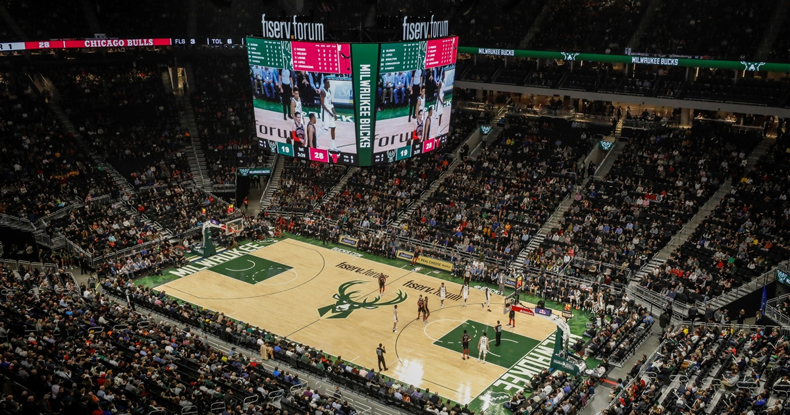

Milwaukee Bucks - Fundado em 1968, o Milwaukee Bucks é uma equipe da NBA que conquistou 2 títulos da liga, sendo o mais recente em 2021, com Giannis Antetokounmpo liderando a equipe para a vitória contra o Phoenix Suns. A franquia é reconhecida por sua forte defesa e jogo de transição, com Giannis sendo uma das maiores estrelas da NBA. O time joga no Fiserv Forum, em Milwaukee, Wisconsin.
Elenco - Giannis Antetokounmpo (#34), Damian Lillard (#0), Khris Middleton (#23), Brook Lopez (#11), Jrue Holiday (#21), Bobby Portis (#9), Taurean Prince (#0), MarJon Beauchamp (#0).
Títulos NBA - 2 (1971, 2021)
Títulos Conferência - 3 (1974, 2021, 2023)
Estádio - Fiserv Forum (17.500)
